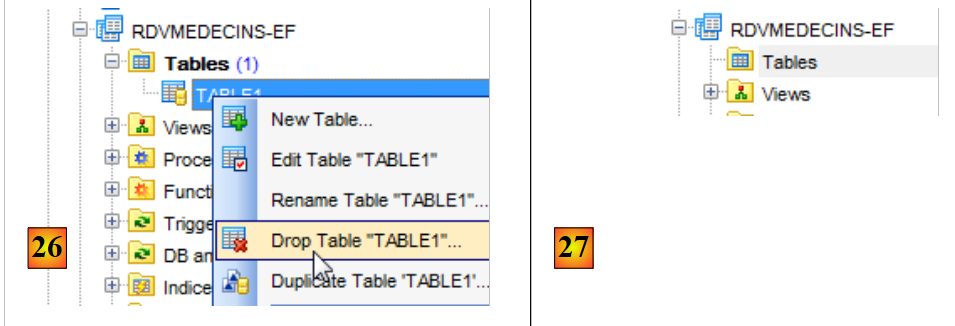
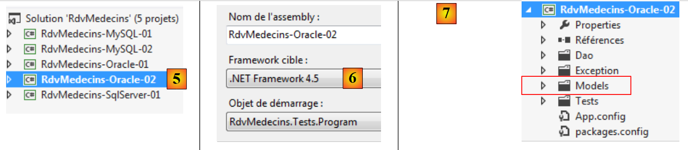

5. Fallstudie mit Oracle Database Express Edition 11g Release 2
5.1. Installation der Tools
Folgende Tools müssen installiert werden:
- SGBD: [http://www.oracle.com/technetwork/products/express-edition/downloads/index.html];
- ein Verwaltungstool: EMS SQL Manager for Oracle Freeware [http://www.sqlmanager.net/fr/products/oracle/manager/download];
- ein Oracle-Client für .NET: ODAC 11.2 Release 5 (11.2.0.3.20) mit Oracle Developer Tools für Visual Studio: [http://www.oracle.com/technetwork/developer-tools/visual-studio/downloads/index.html].
In den folgenden Beispielen hat der Benutzer „system“ das Passwort „system“.
Starten wir Oracle [1] und anschließend das Tool [SQL Manager Lite for Oracle], mit dem wir SGBD und [2] verwalten werden.
 |
- In [3] stellen wir eine Verbindung zu einer bestehenden Datenbank her;
 |
- bei [4] verwenden wir den Oracle-Dienst XE für die Verbindung;
- in [5] geben wir den Namen der Datenbank XE an;
- In [6] melden wir uns als „system / system“ an;
- In [7] schließen wir den Assistenten ab;
 |
- In [8] stellt man eine Verbindung zur Datenbank her;
- In [9] ist man angemeldet;
- Da wir uns als Benutzer „system / system“ mit erweiterten Rechten angemeldet haben, können wir beispielsweise die Benutzer verwalten: [10];
 |
- Bei [11] legen wir einen neuen Benutzer an;
- in [12], er wird [RDVMEDECINS-EF] heißen;
- in [13] und erhält das Passwort rdvmedecins;
- in [14] wird die Erstellung des Benutzers bestätigt;
- in [15] wurde der Benutzer angelegt;
 |
- in [16] ist der Benutzer [RDVMEDECINS-EF] ebenfalls ein Datenbankschema;
- in [17] verfügt der so angelegte Benutzer nicht über ausreichende Rechte. Wir erteilen ihm diese über ein Skript SQL;
 |
- in [18] wird das Skript ausgeführt;
- in [19] versuchen wir, uns unter der Identität von [RDVMEDECINS-EF] anzumelden, um zu sehen, was dieser Benutzer tun kann. Dazu registrieren wir zunächst eine neue Datenbank in [EMS Manager];
 |
- in [19] melden wir uns über den Dienst XE an;
- in [20] melden wir uns unter der Identität RDVMEDECINS-EF / rdvmedecins an;
- Bei [21] wird ein Alias angegeben, der den Namen des angemeldeten Benutzers widerspiegelt;
- in [22]: Man meldet sich mit den angegebenen Daten bei Oracle an;
 |
 |
- In [22] ist die Verbindung erfolgreich hergestellt worden;
- in [23] wird versucht, eine Tabelle im Schema [RDVMEDECINS-EF] anzulegen;
- In [24] wird eine beliebige Tabelle definiert;
- in [25] wird die Definition freigegeben;
 |
- in [26] wurde die Tabelle angelegt. Sie wird gelöscht;
- in [27] wurde sie gelöscht.
Da wir nun über einen Benutzer mit ausreichenden Rechten verfügen, erstellen wir das Projekt VS 2012, das die Tabellen des Schemas [RDVMEDECINS-EF] anhand der Entitätsdefinitionen anlegt.
5.2. Erstellung der Datenbank anhand der Entitäten
Zunächst duplizieren wir den Projektordner „[RdvMedecins-SqlServer-01]“ in „[RdvMedecins-Oracle-01]“ und „[1]“:
 |
- in [2], in VS 2012 löschen wir das Projekt [RdvMedecins-SqlServer-01] aus der Lösung;
 |
- in [3] wurde das Projekt gelöscht;
- in [4] fügen wir ein weiteres hinzu. Dieses befindet sich im Ordner [RdvMedecins-Oracle-01], den wir zuvor angelegt haben;
 |
- In [5] heißt das geladene Projekt [RdvMedecins-SqlServer-01];
- in [6], dessen Name in [RdvMedecins-Oracle-01] geändert wird
 |
- In [7] wird der Lösung ein weiteres Projekt hinzugefügt. Dieses stammt aus dem Ordner [RdvMedecins-SqlServer-01] des Projekts, das wir zuvor aus der Lösung entfernt haben;
- In [8] wurde das Projekt [RdvMedecins-SqlServer-01] wieder in die Lösung aufgenommen.
Das Projekt [RdvMedecins-Oracle-01] ist identisch mit dem Projekt [RdvMedecins-SqlServer-01]. Wir müssen einige Änderungen vornehmen. In [App.config] werden wir die Verbindungszeichenfolge ändern, und [DbProviderFactory] muss an jedes SGBD angepasst werden.
<!-- Verbindungszeichenfolge zur Datenbank -->
<connectionStrings>
<add name="monContexte" connectionString="Data Source=(DESCRIPTION=(ADDRESS_LIST=(ADDRESS=(PROTOCOL=TCP)(HOST=localhost)(PORT=1521)))(CONNECT_DATA=(SERVER=DEDICATED)(SERVICE_NAME=XE)));User Id=RDVMEDECINS-EF;Password=rdvmedecins;" providerName="Oracle.DataAccess.Client" />
</connectionStrings>
<!-- Factory-Provider -->
<system.data>
<DbProviderFactories>
<remove invariant="Oracle.DataAccess.Client" />
<add name="Oracle Data Provider for .NET" invariant="Oracle.DataAccess.Client" description="Oracle Data Provider for .NET" type="Oracle.DataAccess.Client.OracleClientFactory, Oracle.DataAccess, Version=4.112.3.0, Culture=neutral, PublicKeyToken=89b483f429c47342" />
</DbProviderFactories>
</system.data>
- Zeile 3: der Benutzer und sein Passwort;
- Zeilen 6–11: das DbProviderFactory. Zeile 9 verweist auf ein DLL und ein [Oracle.DataAccess], die wir nicht haben. Man erhält sie mit NuGet und [1]:
 |
- bei [2] geben wir im Suchfeld das Stichwort oracle ein;
- bei [3] wählen Sie das passende Paket [Oracle Data Provider] aus. Dabei handelt es sich um den Oracle-Konnektor ADO.NET;
 |
- in [4] die hinzugefügte Referenz;
- in [5], in [App.config] muss die korrekte Version von DLL eingegeben werden. Diese findet man in den Eigenschaften.
In der Datei [Entites.cs] muss das Schema der zu generierenden Tabellen angepasst werden. Das verwendete Schema ist der Name des Benutzers, dem die Tabellen gehören.
[Table("MEDECINS", Schema = "RDVMEDECINS-EF")]
public class Medecin : Personne
{...}
[Table("CLIENTS", Schema = "RDVMEDECINS-EF")]
public class Client : Personne
{...}
[Table("RVS", Schema = "RDVMEDECINS-EF")]
public class Rv
{...}
[Table("CRENEAUX", Schema = "RDVMEDECINS-EF")]
public class Creneau
{...}
Wir konfigurieren die Ausführung des Projekts:
 |
- In [1] geben wir der zu generierenden Assembly einen anderen Namen;
- in [2] legen wir außerdem einen anderen Standard-Namespace fest;
- in [3] legen wir das auszuführende Programm fest.
Zu diesem Zeitpunkt liegen keine Kompilierungsfehler vor. Führen wir das Programm [CreateDB_01] aus. Dabei tritt folgende Ausnahme auf:
Wir erinnern uns, dass wir denselben Fehler bei MySQL hatten. Dies hängt mit dem Typ des Feldes Timestamp in den Entitäten zusammen. Wir nehmen dieselbe Änderung vor. In den Entitäten ersetzen wir die drei Zeilen
[Column("TIMESTAMP")]
[Timestamp]
public byte[] Timestamp { get; set; }
durch die folgenden:
[ConcurrencyCheck]
[Column("VERSIONING")]
public int? Versioning { get; set; }
Wir ändern also den Typ der Spalte von byte[] in int?. Wir erinnern uns, dass sowohl bei SQL Server als auch bei MySQL die Spalte in den Tabellen, die zur Verwaltung der Zugriffskonkurrenz diente, jedes Mal, wenn eine Zeile eingefügt oder geändert wurde, einen Wert aus SGBD erhielt. Von nun an werden wir ein Entitätsfeld verwenden, das eine Ganzzahl ist. In der Tabelle SGBD werden wir gespeicherte Prozeduren verwenden, um diese Ganzzahl jedes Mal, wenn eine Zeile eingefügt oder geändert wird, um eins zu erhöhen.
Wir nehmen die oben beschriebene Änderung für alle vier Entitäten vor und führen die Anwendung anschließend erneut aus. Daraufhin erhalten wir folgende Fehlermeldung:
Zeile 1 weist darauf hin, dass der Oracle-Konnektor ADO.NET die vorhandene Datenbank nicht löschen kann. Erinnern wir uns daran, was hier geschieht. Der Code von [CreateDB_01.cs] lautet wie folgt:
using System;
using System.Data.Entity;
using RdvMedecins.Models;
namespace RdvMedecins_01
{
class CreateDB_01
{
static void Main(string[] args)
{
// Die Datenbank wird angelegt
Database.SetInitializer(new RdvMedecinsInitializer());
using (var context = new RdvMedecinsContext())
{
context.Database.Initialize(false);
}
}
}
}
Zeile 15 löst die Ausführung der Klasse [RdvMedecinsInitializer] aus (Zeile 12). Diese lautet wie folgt:
public class RdvMedecinsInitializer : DropCreateDatabaseAlways<RdvMedecinsContext>
Sie leitet sich von der Klasse [DropCreateDatabaseAlways] ab, die versucht, die Datenbank zu löschen und anschließend neu anzulegen. Wir ändern die Definition der Klasse wie folgt:
public class RdvMedecinsInitializer : CreateDatabaseIfNotExists<RdvMedecinsContext>
Die Datenbank wird nur angelegt, wenn sie noch nicht existiert. Wir führen [CreateDB_01.cs] erneut aus, und nun treten keine Fehler mehr auf. In [EMS Manager] stellen wir jedoch fest, dass die Datenbank [RDVMEDECINS-EF] leer geblieben ist. Da EF eine bereits vorhandene Datenbank gefunden hat, hat es nichts unternommen. Es führt nur dann eine Aktion aus, wenn die Datenbank nicht existiert. Von diesem Punkt an dreht man sich im Kreis. Tatsächlich lautet die Verbindungszeichenfolge für SGBD wie folgt:
<connectionStrings>
<add name="monContexte" connectionString="Data Source=(DESCRIPTION=(ADDRESS_LIST=(ADDRESS=(PROTOCOL=TCP)(HOST=localhost)(PORT=1521)))(CONNECT_DATA=(SERVER=DEDICATED)(SERVICE_NAME=XE)));User Id=RDVMEDECINS-EF;Password=rdvmedecins;" providerName="Oracle.DataAccess.Client" />
</connectionStrings>
In Zeile 2 verwendet die Verbindungszeichenfolge nicht den Namen einer Datenbank, sondern den Namen eines Benutzers. Dieser muss vorhanden sein.
Wir müssen daher die Datenbank [RDVMEDECINS-EF] manuell mit dem Tool [EMS Manager for Oracle] anlegen. Wir beschreiben nicht alle Schritte, sondern nur die wichtigsten.
Die Oracle-Datenbank sieht wie folgt aus:
Die Tabellen
 |
Die verschiedenen Tabellen verfügen über dieselben Primär- und Fremdschlüssel wie die entsprechenden Tabellen in den beiden vorangegangenen Beispielen. Die Fremdschlüssel weisen insbesondere die Attribute ON, DELETE und CASCADE auf.
Die Sequenzen
Hier wurden Oracle-Sequenzen angelegt. Dabei handelt es sich um Generatoren für fortlaufende Zahlen. Es gibt insgesamt 5 davon: [1].
 |
- In [2] sehen wir die Eigenschaften der Sequenz [SEQUENCE_CLIENTS]. Sie generiert aufeinanderfolgende Zahlen im Abstand von 1, beginnend bei 1 bis zu einem sehr großen Wert.
Alle Sequenzen sind nach dem gleichen Muster aufgebaut.
- [SEQUENCE_CLIENTS] wird zur Generierung des Primärschlüssels der Tabelle [CLIENTS] verwendet;
- [SEQUENCE_MEDECINS] wird zur Generierung des Primärschlüssels der Tabelle [MEDECINS] verwendet;
- [SEQUENCE_CRENEAUX] wird zur Generierung des Primärschlüssels der Tabelle [CRENEAUX] verwendet;
- [SEQUENCE_RVS] wird zur Generierung des Primärschlüssels der Tabelle [RVS] verwendet;
- [SEQUENCE_VERSIONS] wird zur Generierung der Werte der Spalten [VERSIONING] aller Tabellen verwendet.
Trigger
Ein Trigger ist eine Prozedur, die von SGBD vor oder nach einem Ereignis (Einfügen, Ändern, Löschen) in einer Tabelle ausgeführt wird. Wir haben 8 davon: [1]:
 |
Sehen wir uns den Code DDL des Triggers [TRIGGER_PK_CLIENTS] an, der den Primärschlüssel der Tabelle [CLIENTS] befüllt:
- Zeilen 1–5: vor jeder Operation INSERT an der Tabelle [CLIENTS];
- Zeile 6: Die Spalte [ID] erhält den nächsten Wert aus der Sequenz [SEQUENCE_CLIENTS]. Der Primärschlüssel erhält somit fortlaufende Werte, die von der Sequenz bereitgestellt werden.
Die Trigger [TRIGGER_PK_MEDECINS, TRIGGER_PK_CRENEAUX, TRIGGER_PK_RVS] funktionieren analog.
Sehen wir uns den Code DDL des Triggers [TRIGGER_VERSIONS_CLIENTS] an, der die Spalte [VERSIONING] der Tabelle [CLIENTS] befüllt:
- Zeilen 1–2: vor jeder Operation INSERT oder UPDATE an der Tabelle [CLIENTS];
- Zeile 8: Die Spalte [VERSIONING] erhält den nächsten Wert aus der Sequenz [SEQUENCE_VERSIONS]. Die Spalte [VERSIONING] erhält somit aufeinanderfolgende Werte aus der Sequenz.
Die Trigger [TRIGGER_VERSION_MEDECINS, TRIGGER_VERSION_CRENEAUX, TRIGGER_VERSION_RVS] funktionieren analog. Die vier Spalten [VERSIONING] beziehen ihre Werte aus derselben Sequenz.
Das Skript zur Erstellung der Tabellen der Oracle-Datenbank [RDVMEDECINS-EF] wurde im Ordner [RdvMedecins / databases / oracle] abgelegt. Der Leser kann es laden und ausführen, um seine Tabellen anzulegen.
Anschließend können die verschiedenen Programme des Projekts ausgeführt werden. Sie liefern dieselben Ergebnisse wie mit dem Server SQL, mit Ausnahme des Programms [ModifyDetachedEntities], das aus demselben Grund abstürzt, aus dem es auch bei MySQL abgestürzt war. Das Problem lässt sich auf dieselbe Weise beheben. Es reicht aus, das Programm [ModifyDetachedEntities] aus dem Projekt [RdvMedecins-MySQL-01] in das Projekt [RdvMedecins-Oracle-01] zu kopieren. Nun tritt jedoch ein neues Problem auf:
- Zeilen 1–4: Der abgelöste Client wurde korrekt aktualisiert;
- Zeile 6: eine bekannte Ausnahme. Diese tritt auf, wenn man eine Entität ändern möchte, ohne über die richtige Version zu verfügen. Hier wollte man die Entität jedoch nicht ändern, sondern löschen:
// Entität außerhalb des Kontexts löschen
using (var context = new RdvMedecinsContext())
{
// Hier haben wir einen neuen leeren Kontext
// „client1“ wird in den Kontext in einem gelöschten Status gesetzt
context.Entry(client1).State = EntityState.Deleted;
// Der Kontext wird gespeichert
context.SaveChanges();
}
EF 5 hat das Löschen von client1 in der Datenbank verweigert, da client1 (Zeile 6) nicht dieselbe Version hatte. Bei MySQL war dieses Problem nicht aufgetreten. Nach und nach stellt sich heraus, dass die Konnektoren ADO.NET verschiedener SGBD geringfügige Unterschiede aufweisen. Wir korrigieren dies wie folgt:
using (var context = new RdvMedecinsContext())
{
// Hier haben wir einen neuen leeren Kontext
// „Kunde1“ wird in den Kontext aufgenommen, um ihn zu löschen
context.Clients.Remove(context.Clients.Find(client1.Id));
// Der Kontext wird gesichert
context.SaveChanges();
}
und es funktioniert.
5.3. Mehrschichtige Architektur auf Basis von EF 5
Wir kehren zu unserer in Abschnitt 2 auf Seite 7 beschriebenen Fallstudie zurück.
 |
Wir beginnen mit der Erstellung der Datenzugriffsebene [DAO]. Dazu duplizieren wir das Konsolenprojekt VS 2012 [RdvMedecins-SqlServer-02] in [RdvMedecins-Oracle-02] [1]:
 |
- in [2], das Projekt [RdvMedecins-SqlServer-02] wird gelöscht;
 |
- In [3] wird ein bestehendes Projekt zur Lösung hinzugefügt. Es wird aus dem soeben erstellten Ordner [RdvMedecins-Oracle-02] übernommen;
- In [4] trägt das neue Projekt den Namen des gelöschten Projekts. Wir werden seinen Namen ändern;
 |
- In [5] haben wir den Namen des Projekts geändert;
- in [6]: Wir ändern einige seiner Eigenschaften, wie hier den Namen der Assembly;
- in [7]; der Ordner [Models] wird gelöscht und durch den Ordner [Models] aus dem Projekt [RdvMedecins-Oracle-01] ersetzt. Tatsächlich nutzen beide Projekte dieselben Vorlagen.
 |
- in [8], die aktuellen Projektverweise;
- in [9] wurde der Oracle-Konnektor ADO.NET mit dem Tool NuGet hinzugefügt.
In der Datei „[App.config]“ werden die Informationen aus der Datenbank „SQL Server“ durch die aus der Oracle-Datenbank ersetzt. Diese finden sich in der Datei „[App.config]“ des Projekts „[RdvMedecins-Oracle-01]“:
<!-- Verbindungszeichenfolge zur Datenbank -->
<connectionStrings>
<add name="monContexte" connectionString="Data Source=(DESCRIPTION=(ADDRESS_LIST=(ADDRESS=(PROTOCOL=TCP)(HOST=localhost)(PORT=1521)))(CONNECT_DATA=(SERVER=DEDICATED)(SERVICE_NAME=XE)));User Id=RDVMEDECINS-EF;Password=rdvmedecins;" providerName="Oracle.DataAccess.Client" />
</connectionStrings>
<!-- Der Factory-Provider -->
<system.data>
<DbProviderFactories>
<remove invariant="Oracle.DataAccess.Client" />
<add name="Oracle Data Provider for .NET" invariant="Oracle.DataAccess.Client" description="Oracle Data Provider for .NET" type="Oracle.DataAccess.Client.OracleClientFactory, Oracle.DataAccess, Version=4.112.3.0, Culture=neutral, PublicKeyToken=89b483f429c47342" />
</DbProviderFactories>
</system.data>
Auch die von Spring verwalteten Objekte ändern sich. Derzeit haben wir:
<!-- Spring-Konfiguration -->
<spring>
<context>
<resource uri="config://spring/objects" />
</context>
<objects xmlns="http://www.springframework.net">
<object id="rdvmedecinsDao" type="RdvMedecins.Dao.Dao,RdvMedecins-SqlServer-02" />
</objects>
</spring>
Zeile 7 verweist auf die Assembly des Projekts [RdvMedecins-SqlServer-02]. Die Assembly lautet nun [RdvMedecins-Oracle-02].
Nachdem dies erledigt ist, können wir den Test der Schicht [DAO] ausführen. Zuvor muss jedoch die Datenbank befüllt werden (Programm [Fill] des Projekts [RdvMedecins-Oracle-01]). Der Test läuft erfolgreich ab.
Wir erstellen die DLL des Projekts, wie es bereits für das Projekt [RdvMedecins-SqlServer-02] geschehen ist, und sammeln diealle DLL-Dateien des Projekts in einem Ordner [lib] zusammen, der in [RdvMedecins-Oracle-02] angelegt wurde. Dies sind die Referenzdateien für das nachfolgende Webprojekt [RdvMedecins-Oracle-03].
 |
Wir sind nun bereit, die Ebene [ASP.NET] unserer Anwendung zu erstellen:
 |
Wir gehen vom Projekt [RdvMedecins-SqlServer-03] aus. Wir duplizieren den Ordner dieses Projekts in [RdvMedecins-Oracle-03] und [1]:
 |
- in [2], mit VS 2012 Express für das Web öffnen wir die Lösung aus dem Ordner [RdvMedecins-Oracle-03];
- In [3] ändern wir sowohl den Namen der Lösung als auch den Namen des Projekts;
 |
- In [4] werden die aktuellen Projektverweise;
- in [5] löschen wir sie;
- in [6], um sie durch Verweise auf die Datei DLL zu ersetzen, die wir soeben in einem Ordner [lib] des Projekts [RdvMedecins-Oracle-02] gespeichert haben.
Nun müssen wir nur noch die Datei [Web.config] ändern. Wir ersetzen ihren aktuellen Inhalt durch den Inhalt der Datei [App.config] aus dem Projekt [RdvMedecins-Oracle-02]. Anschließend führen wir das Webprojekt aus. Es funktioniert. Vergessen Sie nicht, die Datenbank zu füllen, bevor Sie die Webanwendung ausführen.